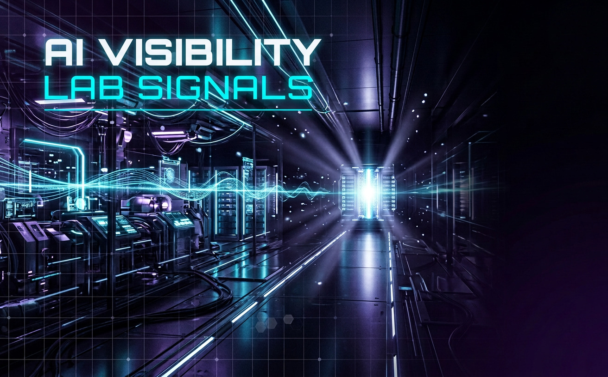

Вас не называют
Клиент спрашивает о салоне, клинике или сервисе — а AI приводит конкурентов.
AI VISIBILITY LAB
Проверим, как локальные клиенты и потенциальные покупатели видят ваш бизнес в ответах AI-систем. Бесплатный мини-аудит: 3 ключевых запроса × 2 нейросети.
Без доступа к рекламным кабинетам. Результат — понятная карта стартовой точки.
Клиент спрашивает о салоне, клинике или сервисе — а AI приводит конкурентов.
Старые цены, неверная география, неактуальные услуги или путаница с другой компанией.
AI чаще использует их сайты, каталоги, обзоры, отзывы и профильные медиа.
Страницы и посты есть, но они не отвечают на важные вопросы клиента системно.
GEO-SCANNER / ТАРИФЫ
От быстрой диагностики до полного исследования AI-видимости бренда. Если сомневаетесь — начните с бесплатного мини-аудита.
СТАРТОВАЯ ДИАГНОСТИКА
Для локального бизнеса и экспертов, которым нужно увидеть стартовую точку AI-видимости.
5–7 рабочих дней
ПОЛНАЯ ДИАГНОСТИКА
Для бизнеса, который хочет понять, почему AI выбирает конкурентов и что делать дальше.
7–10 рабочих дней
ПИЛОТНОЕ ВНЕДРЕНИЕ
Для тех, кому нужен не только отчёт, но и первые внедрения с повторным замером.
4–6 недель
Нужны только стратегия или контент? После GEO-сканера можно перейти к GEO-маршруту и GEO-лаборатории контента.
Заявка оформляется через форму на странице контактов.
Три ключевых запроса в двух AI-системах: бренд, конкуренты, точность сведений и типы источников.
Нет. Ответы AI изменчивы. Мы измеряем видимость, находим пробелы и усиливаем информационную основу бренда.
Ссылка на сайт или соцсети, сфера, регион и контакт для результата.
Нет. GEO дополняет SEO, репутационный маркетинг и контент-маркетинг.

FRESH SIGNALS / БЛОГ
Разбираем GEO, локальный поиск, цифровой след бренда и контент, который помогает людям и AI точнее понять бизнес.
AI ДЛЯ БИЗНЕСА
Капитан, AI-штурман и нейросеть: как автоматизировать рутину, сохранив контроль и характер бренда.
КОНТЕНТНАЯ ЛАБОРАТОРИЯ
Как связать вопрос клиента, доказательства и следующий шаг бренда.
AI-ВИДИМОСТЬ
Система измерения видимости бренда в AI-ответах.
ЛОКАЛЬНЫЙ GEO
Что синхронизировать, чтобы бренд выглядел целостно.
Оставьте ссылку на бренд — проведём первичную проверку и покажем, с чего начать.
Получить бесплатный мини-аудит